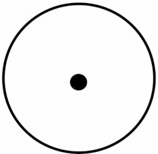
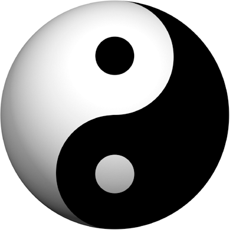
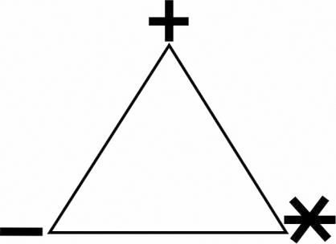
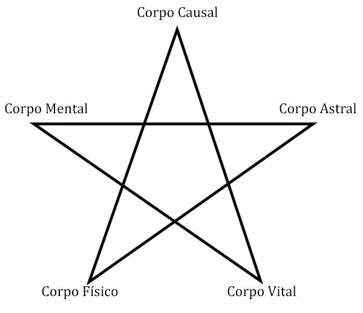
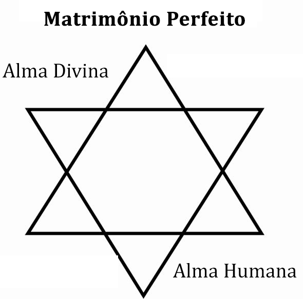
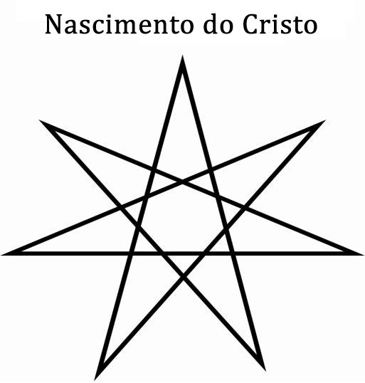
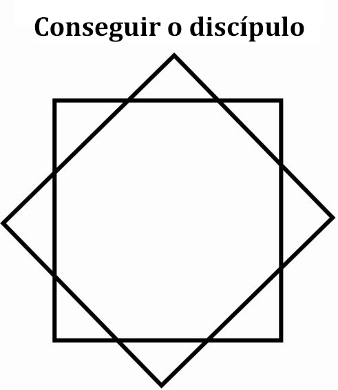
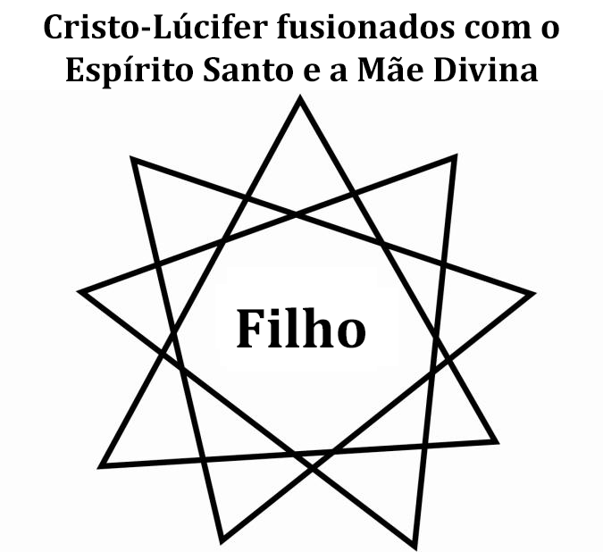
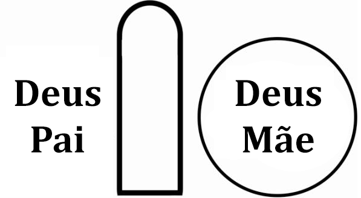
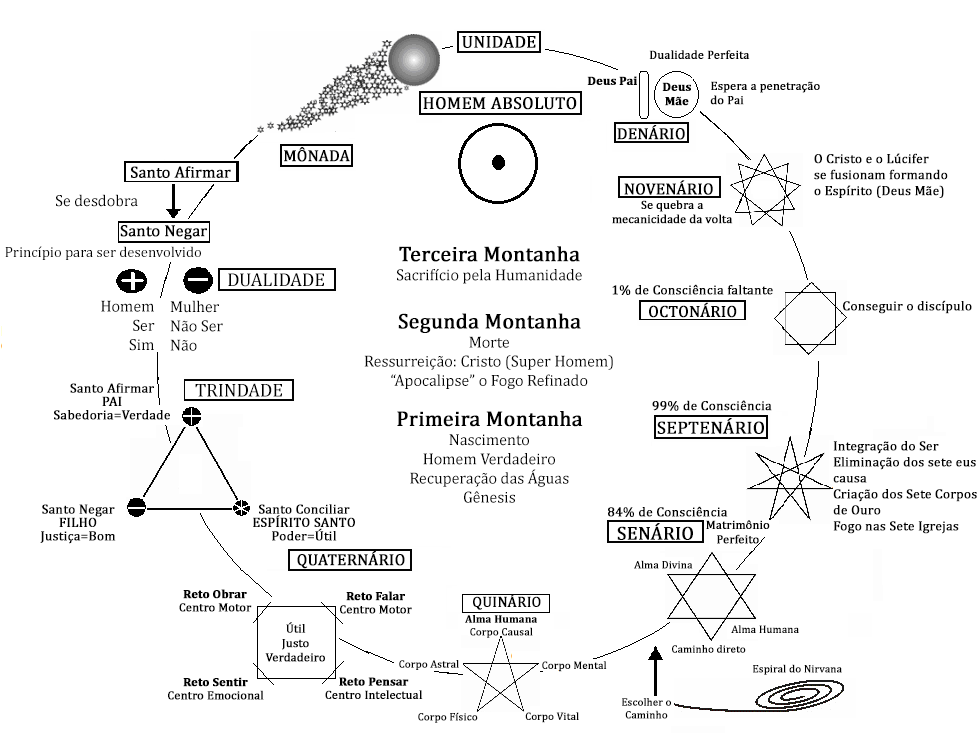

Conferência nº 49
A DUALIDADE
Esta conferência tem como objetivo mostrar o propósito mesmo da existência no planeta.
A UNIDADE:
A chispa é vomitada do Sol Absoluto como unidade e deve regressar aí como unidade. Para poder trabalhar imediatamente que brota do Absoluto tem que desdobrar-se ou dividir-se em duas. É a Mônada em si mesma. Essa Mônada é a DUALIDADE.
A DUALIDADE:
O Santo Afirmar se desdobra no Santo Negar.
- Atman
- Sim
- Positivo
- Ser
- Budhi
- Não
- Negativo
- Não Ser
O branco se desdobra no negro, o alto no baixo, o gordo no magro, alegria em tristeza, triunfo em derrota. Tudo, absolutamente tudo fica com a Dualidade. Um existe em função do outro.
O Santo Afirmar se desdobra no Santo Negar para poder criar. Um necessita do outro, masculino precisa de feminino; o falo precisa do útero, etc., etc.
O SIM é a parte positiva, a parte afirmativa, a parte masculina. O SIM o vemos até com um simples movimento vertical da cabeça. É aceitação.
O NÃO o vemos também, em um movimento horizontal, e é negação. O SIM e o NÃO formam a Cruz. O SIM é a parte masculina, o ativo; o NÃO e a parte feminina, é o passivo.
A TRINDADE:
Ao estarem desdobradas as duas forças aparece a terceira, é o Santo Conciliar, Vejamos:
- Afirmação
- Pai
- Positivo
- Sabedoria
- Verdadeiro
- Negação
- Filho
- Negativo
- Justiça
- Justo
- Conciliação
- Espírito Santo
- Neutro
- Poder
- Útil
O Santo Afirmar, o Pai, se desdobra no Filho ou Santo Negar, e entre os dois aparece o Santo Conciliar, a Energia Criadora do Espírito Santo, a Mãe. O Pai é SIM, a Sabedoria. Se aprendemos a fabricar Sabedoria do NÃO começamos a criar.
Quem é NÃO? O treinador Psicológico, Lúcifer, Ele maneja a Balança. Se o vencemos, Ele nos dará a Luz ou a Sabedoria e o Fogo ou Amor. Se nós nos deixamos vencer por Ele nos tornaremos seus escravos. Ele é o Desejo em todos os seres humanos. E ao ser o Desejo é o Eu de cada um de nós.
Em cada um de nossos desejos está escondido o Fogo ou o amor e está escondida a Luz ou a sabedoria. Se nós queremos triunfar temos que vencer o Diabo.
O Pai diz: "Ninguém vem a MIM senão através do Filho". O Filho é a Justiça. Aquele que quer Sabedoria tem que vencer o Desejo, porque somente tem Sabedoria para aquele que se apossa do Fogo, para o que tem derrotado o Diabo.
Se queremos vencer a Lúcifer devemos estudar o objetivo do Desejo. Quando a pessoa estuda o objetivo do desejo descobre que este busca:
- Ser ou
- Não Ser
Vejamos agora:
- O Pai é a Sabedoria e é a Verdade
- O Filho é a Justiça
- O Espírito Santo é o Poder, é o Útil
Portanto, temos que aprender a viver em vigília de momento em momento. Para cada coisa que vamos fazer devemos perguntar-nos:
- Isto é Verdadeiro?
- Isto é Justo?
- Isto é Útil?
Se nós utilizamos esta técnica chegaremos a algo muito importante, vamos ver que esse é o segredo para poder governar o Quaternário.
O QUATERNÁRIO:
O Quaternário está representado por um Quadrado Perfeito com quatro ângulos retos, que nos convida a refletir um pouco. Esses quatro ângulos retos estão intimamente relacionados com as três funções da Alma que esgotam nossas energias.

- Sentir
- Pensar
- Fazer: Palavras - Obras
Se aplicarmos a Retidão nestas funções lograremos: o Reto Sentir, o Reto Pensar, o Reto Falar e o Reto Obrar.
O Reto Sentir:
Observo no centro emocional uma emoção negativa e digo: Este sentimento não é de meu Ser, é um eu e tem que morrer.
O Reto Pensar:
Observo o que estou pensando e digo: Este pensamento não é de meu Ser, é de um eu e tem que morrer.
O Reto Falar:
Nunca refletimos em que as palavras são Energia Criadora do Espírito Santo e nelas está todo o seu poder encerrado.
Observo que um eu quer falar e não o deixo expressar-se. Peço a Mãe que o elimine.
O Reto Obrar:
Isto que vou fazer é útil? Se não é, não o faço e estou economizando minha energia.
Se o eu insiste peço a Mãe que o elimine.
Se aplicamos a Trindade nestes quatro pontos como resultado aparecerá a Economia de Energia, o Equilíbrio dos Centros, o que nos permitirá cristalizar o QUINÁRIO.
O QUINÁRIO:
O Quinário está simbolizado por uma estrela de Cinco Pontas. Essa estrela de Cinco Pontas é um Homem Verdadeiro. Nós não somos homens. Nos sentimos homens, porém, não somos.
Para ser homens temos que ter criado Cinco Corpos, que nos dão poderes aterradores e que nos tornam completamente diferentes ao que somos. Mas esses Cinco Corpos se criam na forja dos Ciclopes, no Sexo, com a Energia Criadora do Espírito Santo. Criam-se sobre a coluna vertebral.
A este trabalho se denomina GÊNESIS, criar-se a si mesmo. Nascer da Agua e o Fogo. É a PRIMEIRA MONTANHA ou Montanha do Nascimento.
Os Cinco Corpos que se tem que criar são:
- O Corpo Físico Solar
- O Corpo Vital Solar
- O Corpo Astral Solar
- O Corpo Mental Solar
- O Corpo da Vontade Solar
Um homem tem que ter a Vontade senão a tem não é um Homem.
São homens as mulheres e os varões que cheguem a ter esses Cinco Corpos. Não são homens os que têm falo, como acredita vulgarmente todo o mundo, senão todo aquele que tenha trabalhado com seu Mercúrio, com suas energias, poupando-as no Quaternário e investindo na Criação dos Corpos. Assim se transforma em um Homem.
Daí as palavras do Mestre Jesus. Quando os discípulos lhe perguntaram que faziam com a Madalena. Ele disse: "Deixa-me que eu farei dela um Homem". Aí está o segredo, tanto os homens como as mulheres podem fazer a mesma Obra, na mesma existência, o único que se precisa é transmutar a Energia Criadora Sexual para criar-nos os Cinco Corpos.
Para poder nos converter em Homens, tem que aprender a POUPAR a Energia. Essa Energia nos dá a Mãe Divina todas as noites. O total de cem por cento de Energia; todos os dias quando nos levantamos a temos. Então, depende de nós o bom ou o mau uso que fazemos dela.
Terá alguns que prefiram derramar o sêmen, tirar a semente da sua própria estância, como terá outros que optarão por poupá-la. Terá uns que a gastarão em emoções negativas, ou positivas, que a consumiram pensando, outros falando.
Porém aquele que aprenda a poupar poderá criar os Cinco Corpos do Ser, na prática da Transmutação Sexual, e se converterá em um Homem.
Esse Homem é a Alma Humana; deverão ter Alma Humana os varões e as mulheres que aspiram ao Paraíso. Tem que chegar com Ela, sem a Alma Humana não entra ninguém lá.
Todos nós saímos pela porta do Sexo e temos que voltar a entrar pela mesma porta, criando os Corpos Existências do Ser.
Se nós logramos esses Cinco Corpos teremos direito à Escolha do Caminho; Tem dois caminhos, um caminho nos levará diretamente para a Unidade; E tem outro caminho que nos distrai e nos tira do trabalho esotérico, apesar de que vamos seguir metidos no esoterismo, nos tira do trabalho esotérico.
- Um caminho se chama: Caminho do Nirvana ou da Espiral.
- O outro se chama Caminho Direto, É o Caminho do Cristo.
Não tem, senão, estes dois caminhos. Se uma pessoa decide pelo Caminho do Cristo, começa a dar o passo denominado SENÁRIO.
O SENÁRIO:
Depois de ter subido o Fogo até a laringe, se deverá subir até o intercílio (glabela):
Portanto, aquele que decidiu pelo Caminho Direto levará seu Fogo até a GLABELA, e aí brilhará uma estrela que é a Estrela de Seis Pontas, formada por dois triângulos cruzados. Um que é a Alma Divina que desce, e o outro é a Alma Humana que sobe.
A esse passo, para todos os que têm essa estrela de seis pontas na testa, se o conhece como: celebrar o Matrimônio Perfeito. O Iniciado possui a Estrela de Davi, a estrela de Belém, a Estrela de Seis Pontas, que ilumina a árvore de Natal, a que lhe dá direito a participar no Natal do Coração. Somente os homens atrevidos que ousaram tomar pelo Caminho Direto tem a Estrela de Compostela, que essa Estrela se desenvolve na glabela, na sua testa, e se saiba que esta pessoa tem levado a cabo o SENÁRIO.
O propósito é chegar a Deus verdadeiramente. E para chegar a Deus verdadeiramente, tem que dar os passos corretos, não se pode desviar do caminho. Quando já se chegou a essas alturas, todos os que logram este Matrimônio Perfeito, tem direito ao SEPTENÁRIO.
O SEPTENÁRIO:
O Septenário é uma estrela de Sete Pontas. É o Super-Homem, O Cristo.
O Cristo é o Filho do Homem. Se não nos fazemos homens não haverá Cristo.
Indubitavelmente, chegar até o Natal do Coração é o evento mais importante na história do Homem. De nada serviria ter celebrado mil natais se não celebrou uma só vez seu próprio Natal. Então, este evento de celebrar o Natal do Coração, o Advento do Fogo Crístico, é o Principio do APOCALIPSE na pessoa.
Isto esta indicando algo muito importante na pessoa: o começo da SEGUNDA MONTANHA. A Montanha da Morte.
I.N.R.I.: Ignis Natura Renovatur Integram. O Fogo renova integralmente a natureza.
O Cristo é o Amor, o Fogo que ha de renovar toda nossa natureza. Por isso o advento dessa Chama em nosso interior nos transforma radicalmente. O nascimento do Cristo dá lugar ao processo do Apocalipse.
Que quer dizer Apocalipse? É o fim pelo Fogo, porém qual Fogo? Pois o Fogo Sagrado, que deve acender-se em nossa coluna vertebral, o Kundalini, que por sua vez, fará brilhar as Sete Igrejas que cada um tem ao longo da coluna.
Esse Fogo irá ascendendo igreja por igreja até completar as Sete, e levar a cabo a Morte e Ressurreição, diretamente em nós. Porque somente esse Fogo ressuscita, somente esse Fogo nos dá vida e nos conduz ao Nascimento Segundo.
Com a Morte se mata a morte por uma Eternidade. Isto quer dizer que quando ocorre a morte dos Eus Causa, ou as Causas mesmas do Erro, todas nossas chispas ficam livres, e com esta morte se chega á Ressurreição.
O OCTONÁRIO:
Está simbolizado pelo encontro de Dois Quadrados Perfeitos, a Estrela de Oito Pontas.
Este Octonário ou Estrela de Oito Pontas, nos está mostrando o terceiro trabalho, ou trabalho da TERCEIRA MONTANHA.
É um trabalho que fazem todos os que tem logrado converter-se em ressurretos. É o trabalho de buscar um discípulo e encarregar-se de levá-lo até as portas da Segunda Montanha, o trabalho do Sacrifício pela Humanidade.
No Septenário logramos um total de 99% de Consciência. No Octonário vamos a conquistar a porcentagem de 1% de Consciência faltante, para que tenhamos um total de cem por cento de Consciência. Criar-se-ão os Corpos de Luz. E se buscará um Discípulo que inicie a Segunda Montanha.
Esse é o trabalho, é um trabalho dedicado ao Sacrifício pela Humanidade, se o denomina "A Terceira Montanha". Para alguns será muito fácil fazê-la, porque já levam seu discípulo avançado, porém outros deverão começar a fazê-lo. Esse trabalho pode durar séculos, ou milhões de anos. Aqui começará a Águia a tragar a Serpente.
Até aqui temos o Octonário ou Estrela de Oito Pontas, Agora vem os passos finais, o NOVENÁRIO e o DENÁRIO.
O NOVENÁRIO:
O Novenário tem que fusionar-se as forças do Cristo, do Lúcifer e do Espírito Santo em Uma Só Força, o Espírito.
No Novenário vem isso que se denomina o Purgatório, Quando as forças se fusionam formando a "O" do Deus Mãe, integrada pelo Espírito Santo, o Lúcifer e o Cristo, O Fogo, os Três Princípios do Amor. Eles têm que preparar-se e purificar-se.
Porém, vejam o que dizem lá: "O lugar que desembarcam os desafortunados que chegaram a essas alturas". E lhes dizem desafortunados, pois, pela ansiedade tão terrível que tem para que se dê o seguinte passo. Estão a um passo pequeníssimo de entrar ao Absoluto, de que se complete o DEZ.
No Novenário o Pai ainda está por fora, e lhes estão esperando para que a Luz, a Sabedoria do Pai, os penetre e fiquem convertidos em Unidade Múltipla Perfeita.
No Purgatório se termina, ou se mata a Mecanicidade da Volta, a parte mecânica deve terminar ai.
Se nós chegarmos a este ponto já somente é questão de esperar, porque o Pai penetrará e ficará este que é um Homem Absoluto. Um Novo Sol se terá criado.
O DENÁRIO:
O Denário fica completo quando as duas forças se complementam: o "I", ou Sabedoria, e o "O", ou o Amor, Pai-Mãe.
Quando a Sabedoria penetra no Espírito se converte em um Homem Absoluto. Termina-se a Volta, se ha logrado a integração do Ser. Outra Unidade Múltipla Perfeita. Se ha Auto-Realizado um novo Ser no Absoluto.
